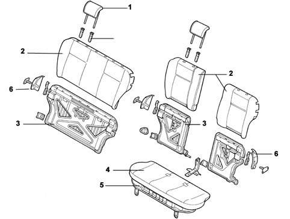

Introduction - REAR SEATS
- Path
- Descriptions > 70 FITTINGS > 7050 REAR SEATS > Introduction - REAR SEATS
- Kind
- system description
- Applies to
- all engines; all production periods
- Interactive page
- https://sloeber94.github.io/elrnDB-fPnd/en/#/2753494
Applies to: all engines; all production periods
The rear seats are fitted with squabs built to ensure maximum occupant safety in the case of various types of impact. They also prevent items in the luggage compartment from being propelled forward.
The squab and seat may be of different types, one-piece seat and squab with central head restraint and slide function, with split seat and squab with slide function and squab with adjustable tilt. The squab recline catches are located near the joint.
The rear cushions come with a pressed steel base with antislip profile that forms an effective antisubmarining structure in conjunction with the beam welded to the rear floor pan. On the sliding version, the slide mechanisms are located to the body floorpan. On certain versions, the rear seat squab may be split and reclined separately 40/60%. On the squab,
The seats are fitted with two head restraints for the side seats. These can be adjusted to two positions. Certain versions come with a third head restraint for the central seat with the same specifications. Versions with a third head restraint also come with a central inertia reel seat belt.
On certain versions, the rear seats may be sliding with adjustable squab recline.
Applies to: all engines; all production periods
General view

1 - Side head restraint 2 - Squab trim and padding 3 - Squab structure 5 - Cushion trim and padding 5 - Cushion bottom 4 - Squab release devices
Applies to: all engines; all production periods
Specifications
One-piece seat and squab with central head restraint and slide function, with split seat and squab with slide function and squab with adjustable recline. The squab recline catches are located near the joint.
The rear cushions come with a pressed steel base with antislip profile that forms an effective antisubmarining structure in conjunction with the beam welded to the rear floor pan. On the sliding version, the slide mechanisms are secured to the body floorpan and controlled by Bowden cables with handles fixed in the central part of the seat. Central grab handle for full seat slide manoeuvre, right grab handle for reclining or adjusting the squab on the same side, left grab handle for reclining or adjusting the squab on the same side. To recline the squab from the luggage compartment, use the squab catch release knob near the wheel arch.